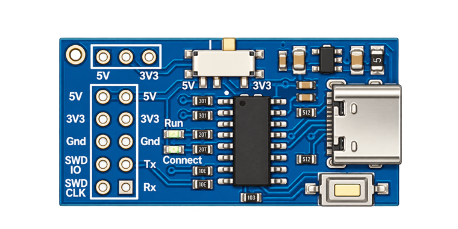

- 1Bootloader
- 2Board
- 3Firmware
- 4Flash
Put the board in bootloader mode
The CH549's bootloader lives in ROM and cannot be erased, so this is always recoverable. It is entered with the button, not with software.

1 2- Unplug the board from USB.
- Hold the button down — marker 1, next to the USB connector.
- Plug the cable back in — marker 2 — while still holding.
- Release. The board now enumerates as
4348:55e0.
The button is only sampled as power arrives. Pressing it while the board is already powered does nothing — you have to replug.
Board connected
Reported by the factory bootloader.
Choose firmware
Every image here writes from address 0 and carries its own loader.
Flash your own .bin
Must be a complete CH549 image starting at address 0 — a WCH
FIRMWARE_*.bin app image will not boot, it has no loader in
front of it.
Ready to flash
This erases the CH549 and writes the image below.
Flashing
Do not unplug the board.
- Erase
- Write
- Verify
- Reboot
Flashed and verified
Flash failed
Nothing is bricked. The bootloader is in ROM — unplug, hold the button, replug, and try again. If it keeps failing at the same offset, open the log below and file an issue with it.